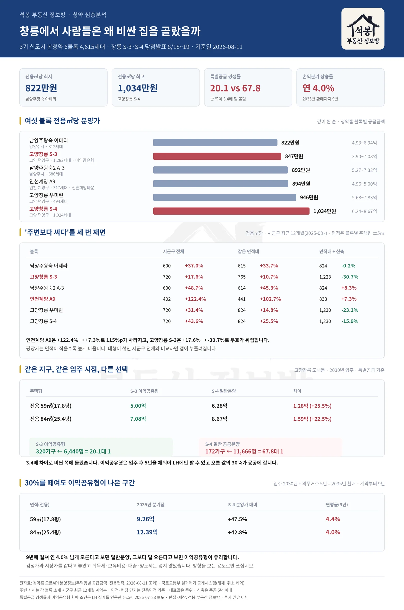
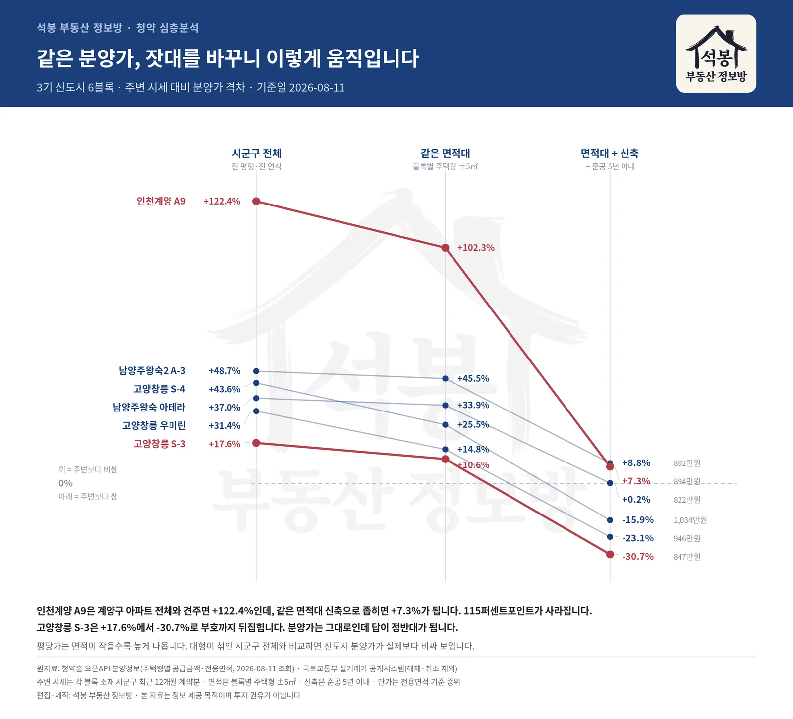
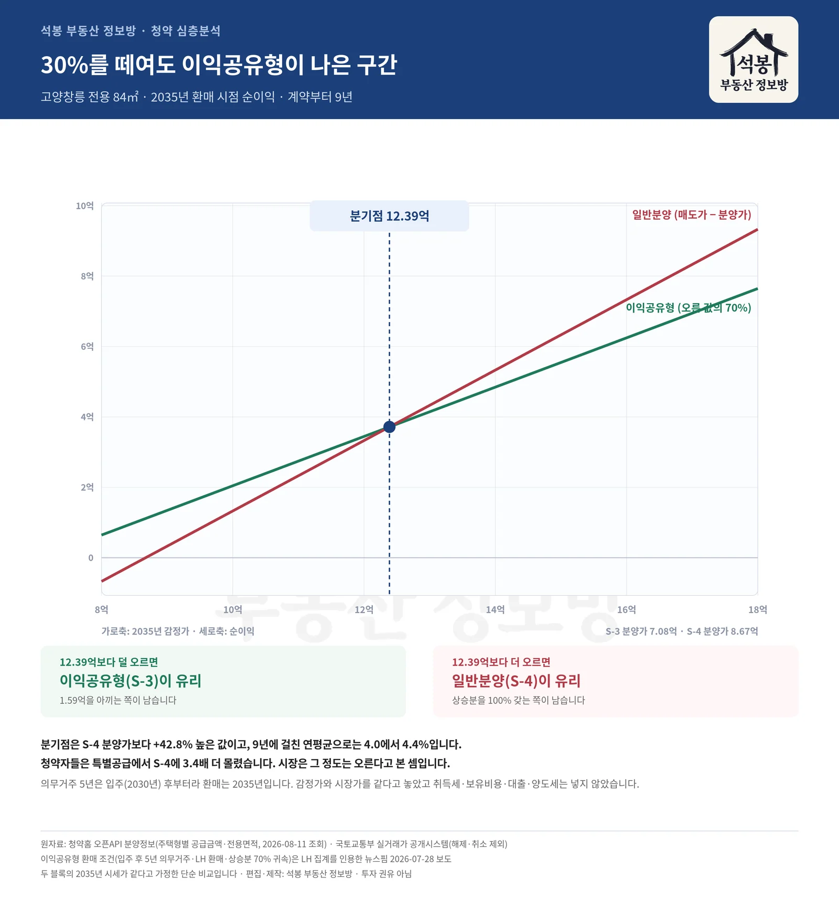

고양창릉 도내동에 블록 두 개가 나란히 들어섭니다. 같은 날 청약을 받았고 입주도 2030년으로 한 달 차이인데, 같은 전용 84㎡(25.4평) 분양가가 1.59억 벌어집니다. 그런데 특별공급 경쟁률은 싼 S-3이 20.1대 1, 비싼 S-4가 67.8대 1이었습니다. 사람들이 비싼 쪽으로 3.4배 더 몰린 겁니다. 왜 그랬는지, 그 판단이 계산상 맞는지 따져봤습니다. 올해 5월과 7월에 나온 3기 신도시 여섯 블록 4,615세대의 분양가도 함께 재봤습니다. 두 블록 당첨자 발표는 8월 18일과 8월 19일, 다음 주입니다.
5월과 7월에 나온 여섯 블록
고양창릉에서 셋, 남양주왕숙에서 둘, 인천계양에서 하나입니다. 5월에 넷, 7월에 둘이 나왔습니다. 우리 청약 데이터가 담고 있는 4월 27일 이후 공고분이라 그 전에 나온 본청약은 빠져 있습니다. 창릉 A-4·S-5·S-6처럼 앞서 분양돼 입주가 2027~2028년인 블록은 이번 비교에 넣지 않았습니다. 아래 평당가는 모두 전용면적 기준이고, 값이 싼 순서로 놓았습니다.
블록
세대
분양가
전용㎡당
청약
남양주왕숙 아테라 남양주시
812세대
4.93억~6.94억
822만원
5월
고양창릉 S-3 이익공유형 고양 덕양구
1,282세대
3.90억~7.08억
847만원
7월
남양주왕숙2 A-3 남양주시
686세대
5.27억~7.32억
892만원
5월
인천계양 A9 신혼희망타운 인천 계양구
317세대
4.96억~5.00억
894만원
5월
고양창릉 우미린 고양 덕양구
494세대
5.68억~7.83억
946만원
5월
고양창릉 S-4 고양 덕양구
1,024세대
6.24억~8.67억
1,034만원
7월
전용㎡당으로는 남양주왕숙 아테라(822만원)이 가장 싸고 고양창릉 S-4(1,034만원)이 가장 비쌉니다. 눈여겨볼 것은 같은 고양창릉 안에서도 S-3(847만원)과 S-4가 22.1% 벌어진다는 점입니다. 둘은 도내동 일대에 함께 들어서고 입주도 2030년으로 한 달 차이입니다. 같은 창릉 안에서도 우미린이 S-4보다 8.5% 싼 것을 보면 블록마다 사정이 다르지만, S-3과 S-4의 차이는 분양 방식에서 옵니다.
오늘(2026-08-11) 기준 진행 상태
5월에 접수한 넷(남양주왕숙 아테라, 남양주왕숙2 A-3, 인천계양 A9, 고양창릉 우미린)은 6월에 당첨자 발표가 끝났습니다.
7월에 접수한 고양창릉 S-3 · 고양창릉 S-4는 8월 18일과 8월 19일에 발표, 계약은 11월 예정입니다. 지금 새로 넣을 수 있는 3기 신도시 청약은 없습니다. 이 글은 끝난 청약을 되짚어 다음 판단에 쓰자는 쪽입니다.

여기서부터는 회원에게 보여드립니다
카카오 로그인 3초면 전문을 읽을 수 있습니다. 무료입니다.
가입하시면 지역 시장조사 보고서(약식)를 2회 무료로 요청하실 수 있습니다.
이미 회원이면 같은 버튼으로 로그인만 됩니다
"주변보다 싸다"를 세 번 재봤습니다
3기 신도시 기사에 늘 나오는 문장이 있습니다. 주변 시세보다 몇 퍼센트 싸다는 말입니다. 그런데 그 "주변 시세"가 무엇인지에 따라 답이 완전히 달라집니다. 같은 분양가를 세 가지 잣대로 재봤습니다.
먼저 그 시군구 아파트 전체와 비교했습니다. 기사에서 흔히 쓰는 방식입니다. 둘째는 블록마다 실제 주택형 범위에 ±5㎡를 더한 구간으로 좁힌 값입니다. 예를 들어 S-3은 전용 46~84㎡(13.9평~25.4평)라 전용 41~89㎡(12.4평~26.9평), 55㎡(16.6평)대 단일 평형인 계양 A9은 전용 50~61㎡(15.1평~18.5평)만 봅니다. 평당가는 면적이 작을수록 높게 나오는데 신도시 분양은 대개 중소형이라, 대형이 섞인 전체 중위와 비교하면 갭이 부풀려집니다. 마지막으로 여기서 준공 5년 이내 신축만 남겼습니다. 신도시에 지어질 집은 신축이니까요.
블록
시군구 전체
같은 면적대
면적대 + 신축
남양주왕숙 아테라 822만원
600만원 9,189건 +37.0%
614만원 7,598건 +33.9%
820만원 798건 +0.2%
고양창릉 S-3 이익공유형 847만원
720만원 5,038건 +17.6%
766만원 4,509건 +10.6%
1,223만원 434건 -30.7%
남양주왕숙2 A-3 892만원
600만원 9,189건 +48.7%
613만원 7,606건 +45.5%
820만원 798건 +8.8%
인천계양 A9 신혼희망타운 894만원
402만원 2,760건 +122.4%
442만원 1,012건 +102.3%
833만원 194건 +7.3%
고양창릉 우미린 946만원
720만원 5,038건 +31.4%
824만원 3,880건 +14.8%
1,230만원 402건 -23.1%
고양창릉 S-4 1,034만원
720만원 5,038건 +43.6%
824만원 3,896건 +25.5%
1,230만원 402건 -15.9%
인천계양 A9은 계양구 아파트 전체와 비교하면 +122.4%로 두 배가 넘게 비싸 보이지만, 같은 면적대 신축과 맞추면 +7.3%입니다. 115퍼센트포인트가 사라졌습니다.
지구로 갈라 보면 방향이 갈립니다. 창릉 세 블록은 같은 면적대 신축보다 16에서 31% 싸고, 왕숙과 계양 세 블록은 신축과 비슷하거나 조금 비쌉니다(+0.2에서 +8.8%). 고양창릉 S-3은 덕양구 전체보다 +17.6% 비싸지만, 같은 면적대 신축과 견주면 -30.7%입니다. 고양창릉 S-4도 전체 대비 +43.6%에서 신축 대비 -15.9%로 바뀝니다.

이 표를 그대로 믿지는 마십시오. 잣대를 하나 더 바꾸면 또 달라집니다. 덕양구 신축에는 한강변 덕은동이 섞여 있습니다. 덕은동만 1,341만원(234건)이라 비교군 절반 이상을 차지하며 중위를 끌어올립니다. 덕은동을 빼면 1,131만원(193건)이고, S-3은 -25.1%, S-4는 -8.6%가 됩니다. 남양주는 반대입니다. 왕숙 두 블록은 일패동인데 비교군에는 진접읍처럼 먼 곳이 절반 가까이 섞여 있습니다. 바로 옆 다산동 신축만 쓰면 1,167만원(340건)이고, 아테라는 -29.6%, 왕숙2 A-3은 -23.6%로 훨씬 싸게 나옵니다. 계양 A9은 표본이 194건으로 가장 적습니다. 인천계양 신도시 예정지 바로 옆에는 신축 거래가 없어 작전동·효성동 같은 계양구 다른 동네와 비교한 값입니다.
그리고 신축 비교군은 지금 거래되는 집입니다. 신도시 입주는 2030년이니 그때 시세는 아무도 모릅니다.
두 블록은 같은 날 청약을 받았습니다. 7월 27일 특별공급, 28일과 29일 일반공급이었습니다(그 앞 7월 20일과 21일은 사전청약 당첨자 몫이었습니다). 도내동 일대에 나란히 들어서고 입주는 S-3이 2030년 2월, S-4가 3월입니다. 분양가만 이만큼 다릅니다.
면적
S-3 이익공유형
S-4 일반 공공분양
차이
비율
전용 59㎡(17.8평)
5.00억
6.28억
1.28억
25.5%
전용 84㎡(25.4평)
7.08억
8.67억
1.59억
22.5%
전용 59㎡(17.8평)가 1.28억, 전용 84㎡(25.4평)가 1.59억 차이입니다. 같은 면적에도 A·B·C 타입이 있어 값이 조금씩 다른데, 위 표는 블록마다 그 면적의 최고가끼리 맞춘 것입니다. 그런데 특별공급 결과는 이랬습니다.
비싼 쪽에 3.4배 더 몰렸습니다. 이유는 이익공유형의 조건에 있습니다. S-3은 입주 후 5년을 채운 뒤 LH에만 되팔 수 있고, 그때 환매가는 분양가에 감정가와 분양가 차액의 70%를 더해 정합니다. 값이 오른 만큼의 30%는 공공이 가져갑니다. 개인끼리 사고팔 수도 없습니다.
30%를 떼여도 이익공유형이 나은 구간
그러면 어느 쪽이 유리한지는 집값이 얼마나 오르느냐에 달려 있습니다. 계산해 보면 답이 하나로 떨어집니다.
먼저 시점을 맞춰야 합니다. 의무거주 5년은 계약한 날이 아니라 입주하고 나서부터입니다. 입주가 2030년이니 환매가 가능해지는 것은 2035년이고, 분양가를 낸 2026년부터 세면 9년입니다.
이익공유형 순이익은 오른 값의 70%입니다. 일반분양 순이익은 매도가에서 분양가를 뺀 값입니다. 두 값이 같아지는 지점이 손익분기입니다.
면적
S-3 분양가
S-4 분양가
2035년 분기점
S-4 대비 상승률
연평균(9년)
전용 59㎡(17.8평)
5.00억
6.28억
9.26억
+47.5%
4.4%
전용 84㎡(25.4평)
7.08억
8.67억
12.39억
+42.8%
4.0%

손익분기
전용 84㎡(25.4평)라면 2035년에 12.39억이 분기점입니다. 그보다 더 오르면 일반분양이 유리하고, 덜 오르면 이익공유형이 유리합니다. 분양가보다 42.8% 높은 값이고 9년 연평균으로는 4.0%, 전용 59㎡(17.8평)는 4.4%입니다. 청약자들은 3.4배 차이로 S-4를 골랐으니, 시장은 그 정도는 오른다고 본 셈입니다.
이 계산에 들어간 가정을 다 적습니다. ① 두 블록의 2035년 시세가 같다고 놓았습니다. 단지가 다르고 주택형 구성도 달라 실제로는 차이가 납니다. ② 이익공유형은 LH 감정가로, 일반분양은 시장가로 처분하는데 둘을 같은 값으로 뒀습니다. 감정가가 시장가보다 낮게 나오면 이익공유형이 더 불리해집니다. ③ 취득세·보유비용·대출 조건·양도세를 넣지 않았습니다. 분기점 12.39억은 1세대 1주택 비과세 한도를 넘는 구간이라 양도세 차이가 작지 않을 수 있습니다. ④ 순이익 절대액으로만 비교했습니다. S-4에는 1.59억을 더 넣어야 하니 투입 자본 대비로 보면 이익공유형이 유리한 구간이 넓어집니다. ⑤ 값이 내리는 경우는 다루지 않았습니다. 같은 산식이면 이익공유형은 손실도 70%만 집니다. 방향을 보는 계산으로만 쓰십시오.
정리하면
올해 5월과 7월에 나온 3기 신도시 본청약 여섯 블록의 전용㎡당 분양가는 822만원에서 1,034만원 사이였습니다. 같은 고양창릉 안에서도 S-3과 S-4가 22.1% 벌어집니다.
"주변보다 싸다"는 말은 잣대를 확인하고 들으셔야 합니다. 시군구 전체와 비교하면 여섯 블록이 모두 비싸게 나오는데, 같은 면적대 신축과 맞추면 창릉 세 블록이 싼 쪽으로 돌아섭니다. 같은 분양가로 정반대 결론이 나옵니다.
더 싼 S-3을 사람들이 피한 것은 30%를 떼이기 때문입니다. 그 선택이 맞으려면 9년에 걸쳐 연 4.0에서 4.4%쯤은 올라야 합니다. 당장은 8월 18일과 8월 19일 당첨자 발표가 먼저이고, 그 선택이 맞았는지에 대한 답은 2035년 환매 감정가가 나와야 나옵니다. LH는 S-3 이후 올해 예정된 이익공유형 공급이 없다고 밝혔으니, 이 성적표가 한동안 유일한 참고자료가 됩니다.
원자료: 한국부동산원 청약홈 오픈API 분양정보(주택형별 공급금액·전용면적, 2026-08-11 조회) · 국토교통부 실거래가 공개시스템(아파트 매매, 해제·취소 제외) · 주변 시세는 각 블록 소재 시군구의 최근 12개월(2025년 8월 이후) 계약 신고분이며 면적 통제는 각 블록 주택형 범위에 ±5㎡를 더한 구간, 신축은 준공 5년 이내 · 기준일 2026-08-11 · S-3 전용 46~84㎡(13.9~25.4평)·S-4 전용 59~84㎡(17.8~25.4평)와 청약 일정(7월 20~21일 사전청약 당첨자, 27일 특별공급, 28~29일 일반공급), 입주 시기(S-3 2030년 2월·S-4 3월), 올해 이익공유형 추가 공급 없음은 언론 보도 확인분 · 표의 '청약'은 청약홈 접수 시작월 · 면적과 평당·㎡당 단가는 모두 전용면적 기준이고 대표값은 중위(가운데 값)이며, S-3과 S-4를 면적별로 견준 값은 같은 전용면적 안에서 각 블록의 최고가 주택형끼리 맞춘 것입니다 · 특별공급 경쟁률과 이익공유형 환매 조건(5년 의무거주·LH 환매·상승분 70% 귀속)은 LH 집계를 인용한 뉴스핌 2026-07-28 보도 · 손익분기는 계약(2026)에서 환매 가능 시점(2035년, 입주 2030년 + 의무거주 5년)까지 9년을 잡아 계산했고, 두 블록 시세가 같다고 본 단순 비교이며 취득세·보유비용·대출·양도세를 넣지 않았습니다 · 편집·제작: 석봉 부동산 정보방 · 본 자료는 정보 제공 목적이며 투자 권유가 아닙니다.